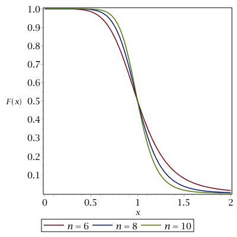

collective variable library¶
- class ufedmm.cvlib.CoordinationNumber(system, group1, group2, n=6, r0=Quantity(value=4, unit=angstrom))[source]¶
Bases:
CustomNonbondedForceA continuos approximation for the number of neighbor pairs among atoms of two groups, defined as:
\[N_{\mathbf{g}_1, \mathbf{g}_2}(\mathbf{r}) = \sum_{i \in \mathbf{g}_1} \sum_{j \in \mathbf{g}_2} S\left(\frac{r_{i,j}}{r_0}-1\right) F_n \left(\frac{r_{i,j}}{r_0}\right)\]where \(r_0\) is a threshold distance and \(r_{ij}\) is the distance between atoms \(i \in \mathbf{g}_1\) and \(j \in \mathbf{g}_2\). The function \(F_n(x)\) is a continuous step function defined as
\[F_n(x) = \frac{1}{1+x^n}\]where \(n\) is a sharpness parameter. With \(n = 6\) (default), this is the same function defined in [2]. It is also a special case with \(d_0 = 0\) and \(m=2n\) of the coordination collective variable defined in PLUMED. It has the following shape for varying n values:
Besides, \(S(x)\) is a switching function given by
\[\begin{split}S(x) = \begin{cases} 1 & x < 0 \\ 1-6x^5+15x^4-10x^3 & 0 \leq x \leq 1 \\ 0 & x > 1 \end{cases}\end{split}\]Thus, the amount summed up for each atom pair decays smoothly to zero throughout the interval \(r_{i,j} \in [r_0, 2 r_0]\), meaning that \(2 r_0\) is an actual cutoff distance.
Warning
If the two specified atom groups share atoms, each pair i,j among these atoms will be counted only once.
- Parameters:
system (openmm.System) – The system for which this collective variable will be computed.
group1 (list(int)) – The indices of the atoms in the first group.
group2 (list(int)) – The indices of the atoms in the second group.
- Keyword Arguments:
n (int or float, default=6) – Exponent that controls the sharpness of the sigmoidal function.
r0 (unit.Quantity, default=4*unit.angstroms) – The threshold distance, which is also half the actual cutoff distance.
Example
>>> import openmm >>> import ufedmm >>> from openmm import app >>> from ufedmm import cvlib >>> model = ufedmm.AlanineDipeptideModel() >>> carbons = [atom.index for atom in model.topology.atoms() if atom.element == app.element.carbon] >>> oxygens = [atom.index for atom in model.topology.atoms() if atom.element == app.element.carbon] >>> N = cvlib.CoordinationNumber(model.system, carbons, oxygens) >>> N.setForceGroup(1) >>> model.system.addForce(N) 4 >>> platform = openmm.Platform.getPlatformByName('Reference') >>> context = openmm.Context(model.system, openmm.CustomIntegrator(0), platform) >>> context.setPositions(model.positions) >>> context.getState(getEnergy=True, groups={1}).getPotentialEnergy()._value 9.461968618078124
- class ufedmm.cvlib.HelixAngleContent(topology, first, last, n=6, theta_ref=Quantity(value=88, unit=degree), theta_tol=Quantity(value=15, unit=degree))[source]¶
Bases:
CustomAngleForceFractional alpha-helix content of a sequence of residues in a protein chain based on the angles between consecutive alpha-carbon atoms, defined as follows:
\[\alpha_\theta(r_M,\cdots,r_N) = \frac{1}{N-M-1} \sum_{i=M+1}^{N-1} F_n\left( \frac{\theta(\mathrm{C}_\alpha^{i-1},\mathrm{C}_\alpha^i,\mathrm{C}_\alpha^{i+1}) - \theta_\mathrm{ref}}{\theta_\mathrm{tol}}\right)\]where \(\theta(\mathrm{C}_\alpha^{i-1},\mathrm{C}_\alpha^i,\mathrm{C}_\alpha^{i+1})\) is the angle between three consecutive alpha-carbon atoms, \(\theta_\mathrm{ref}\) is the reference value of this angle, and \(\theta_\mathrm{tol}\) is the tolerance threshold around this reference.
The function \(F_n(x)\) is defined as in
CoordinationNumber, but only even integer values are accepted for n.- Parameters:
topology (openmm.app.Topology) – The topology of the system for which this collective variable will be computed.
first (int) – The indices of the first and last residues involved in the alpha helix.
last (int) – The indices of the first and last residues involved in the alpha helix.
- Keyword Arguments:
n (even integer, default=6) – Exponent that controls the sharpness of the sigmoidal function.
theta_ref (unit.Quantity, default=88*unit.degrees) – The reference value of the alpha carbon angle in the alpha helix.
theta_tol (unit.Quantity, default=*unit.degrees) – The tolerance for the deviation from the alpha carbon angle.
- class ufedmm.cvlib.HelixHydrogenBondContent(topology, first, last, n=6, d0=Quantity(value=3.3, unit=angstrom))[source]¶
Bases:
CustomBondForceFractional alpha-helix content of a sequence of residues in a protein chain based on the hydrogen bonds between oxygen atoms and H-N groups located four residues apart, defined as follows:
\[\alpha_\mathrm{hb}(r_M,\cdots,r_N) = \frac{1}{M-N-2} \sum_{i=M+2}^{N-2} F_n\left( \frac{d(\mathrm{O}^{i-2}, \mathrm{H}^{i+2})}{d_0}\right)\]where \(d(\mathrm{O}^{i-2}, \mathrm{H}^{i+2})\) is the distance between the oxygen and hydrogen atoms and \(d_0\) is the threshold distance for characterizing a hydrogen bond.
The function \(F_n(x)\) is defined as in
CoordinationNumber.- Parameters:
topology (openmm.app.Topology) – The topology of the system for which this collective variable will be computed.
first (int) – The indices of the first and last residues involved in the alpha helix.
last (int) – The indices of the first and last residues involved in the alpha helix.
- Keyword Arguments:
n (int or float, default=6) – Exponent that controls the sharpness of the sigmoidal function.
d0 (unit.Quantity, default=4*unit.angstroms) – The threshold distance, which is also half the actual cutoff distance.
- class ufedmm.cvlib.HelixRamachandranContent(topology, first, last, n=6, phi_ref=Quantity(value=-63.8, unit=degree), phi_tol=Quantity(value=25, unit=degree), psi_ref=Quantity(value=-41.1, unit=degree), psi_tol=Quantity(value=25, unit=degree))[source]¶
Bases:
CustomTorsionForceFractional alpha-helix content of a sequence of residues in a protein chain based on the Ramachandran dihedral angles, defined as follows:
\[\begin{split}\alpha_{\phi,\psi}(r_M,\cdots,r_N) = \frac{1}{2(N-M-1)} \sum_{i=M+1}^{N-1} \Bigg[ F_n\left( \frac{\phi(\mathrm{C}^{i-1},\mathrm{N}^i,\mathrm{C}_\alpha^i, \mathrm{C}^i) - \phi_\mathrm{ref}}{\phi_\mathrm{tol}} \right) + \\ F_n\left( \frac{\psi(\mathrm{N}^i,\mathrm{C}_\alpha^i, \mathrm{C}^i, \mathrm{N}^{i+1}) - \psi_\mathrm{ref}}{\psi_\mathrm{tol}} \right) \Bigg]\end{split}\]where \(\phi(\mathrm{C}^{i-1},\mathrm{N}^i,\mathrm{C}_\alpha^i, \mathrm{C}^i)\) and \(\psi(\mathrm{N}^i,\mathrm{C}_\alpha^i, \mathrm{C}^i, \mathrm{N}^{i+1})\) are the Ramachandran dihedral angles, \(\phi_\mathrm{ref}\) and \(\psi_\mathrm{ref}\) are their reference values in an alpha helix, and \(\phi_\mathrm{tol}\) and \(\psi_\mathrm{tol}\) are the threshold tolerances around these refenrences.
The function \(F_n(x)\) is defined as in
CoordinationNumber, but only even integer values are accepted for n.Default values are the overall average alpha-helix dihedral angles and their dispersions reported in [3].
- Parameters:
topology (openmm.app.Topology) – The topology of the system for which this collective variable will be computed.
first (int) – The indices of the first and last residues involved in the alpha helix.
last (int) – The indices of the first and last residues involved in the alpha helix.
- Keyword Arguments:
n (even integer, default=6) – Exponent that controls the sharpness of the sigmoidal function.
phi_ref (unit.Quantity, default=-63.8*unit.degrees) – The reference value of the Ramachandran \(\phi\) dihedral angle in the alpha helix.
phi_tol (unit.Quantity, default=25*unit.degrees) – The tolerance for the deviation from the Ramachandran \(\phi\) dihedral angle.
psi_ref (unit.Quantity, default=-41.1*unit.degrees) – The reference value of the Ramachandran \(\psi\) dihedral angle in the alpha helix.
psi_tol (unit.Quantity, default=25*unit.degrees) – The tolerance for the deviation from the Ramachandran \(\psi\) dihedral angle.
- class ufedmm.cvlib.InOutCoulombForce(group, nbforce, style='conductor-reaction-field', damping_coefficient=Quantity(value=0.2, unit=/angstrom), scaling_parameter_name='inOutCoulombScaling', pbc_for_exceptions=False)[source]¶
Bases:
_InOutForceCut-off, pairwise Coulomb interactions between the atoms of a specified group and al other atoms in the system, referred to as in/out Coulomb interactions. All charges are imported from a provided NonbondedForce object, which is then modified so that all in-group interactions are treated as exceptions and all charges of the group atoms are scaled by a newly created Context global parameter whose default value is 0.0.
Note
No exceptions which involve in/out atom pairs are allowed.
Warning
- side effect:
The constructor of this class modifies the passed NonbondedForce object.
The model equation is
\[V_\mathrm{coul}(\mathbf{r}) = \sum_{i \in \mathcal{G}} \sum_{j \notin \mathcal{G}} \frac{q_i q_j}{4 \pi \epsilon_0 r_c} u\left(\frac{r}{r_c}\right)\]where \(\mathcal{G}\) is the specified group and the function \(u(x)\) can be chosen from a number of different styles:
Shifted:
\[u(x) = \frac{1}{x} - 1\]Shifted-force:
\[u(x) = \frac{1}{x} + x - 2\]Conductor Reaction-field (default):
\[u(x) = \frac{1}{x} + \frac{x^2}{2} - \frac{3}{2}\]Reaction-field (with finite dielectric constant \(\epsilon\)):
\[u(x) = \frac{1}{x} + \frac{(2\epsilon-1)x^2-3\epsilon}{2\epsilon+1}\]Damped:
\[u(x) = \frac{\mathrm{erfc}(\alpha_c x)}{x}\]Damped-shifted-force (DSF), with \(\alpha_c = \alpha r_c\):
\[u(x) = \frac{\mathrm{erfc}(\alpha_c x)}{x} - \mathrm{erfc}(\alpha_c) + \left[\mathrm{erfc}(\alpha_c) + \frac{2\alpha_c e^{-\alpha_c^2}}{\sqrt{\pi}}\right]\left(x - 1\right)\]- Parameters:
group (list of int) – The atoms in the specified group.
nbforce (openmm.NonbondedForce) – The NonbondedForce object from which the atom charges are imported.
- Keyword Arguments:
style (str, default='conductor-reaction-field') – The style of cutoff electrostatic potential to be used. Valid options are shifted, shifted-force, reaction-field, conductor-reaction-field, damped, and damped-shifted-force.
damping_coefficient (float or unit.Quantity, default=0.2/unit.angstroms) – The damping coefficient \(\alpha\) in inverse distance unit.
scaling_parameter_name (str, default='inOutCoulombScaling') – A Context global parameter whose value will multiply, in the passed NonbondedForce object, the epsilon parameters of all atoms in the specified group.
pbc_for_exceptions (bool, default=False) – Whether to consider periodic boundary conditions for exceptions in the NonbondedForce object. This might be necessary if the specified group contains several detached molecules or one long molecule.
- Raises:
ValueError: – Raised if there are any exceptions in the NonbondedForce object involving cross-group (i.e. in/out) atom pairs.
ValueError: – Raised if an invalid style keyword value is passed.
- class ufedmm.cvlib.InOutLennardJonesForce(group, nbforce, pbc_for_exceptions=False, softcore=False, keep_charges=True)[source]¶
Bases:
_InOutForceLennard-Jones (LJ) interactions between the atoms of a specified group and all other atoms in the system, referred to as in/out LJ interactions. All LJ parameters are imported from a provided NonbondedForce object, which is then modified so that all in-group interactions are treated as exceptions and all atoms of the group are removed from regular LJ interactions.
Note
No exceptions which involve in/out atom pairs are allowed.
Warning
- side effect:
The constructor of this class modifies the passed NonbondedForce object.
The model equation is:
\[V_\mathrm{LJ}(\mathbf{r}) = \sum_{i \in \mathcal{G}} \sum_{j \notin \mathcal{G}} \epsilon_{ij} u_\mathrm{LJ}\left(\frac{r_{ij}}{\sigma_{ij}}\right)\]where \(\mathcal{G}\) is the specified group and
\[u_\mathrm{LJ}(x) = 4(x^{-12} - x^{-6})\]- Parameters:
group (list of int) – The atoms in the specified group.
nbforce (openmm.NonbondedForce) – The NonbondedForce object from which the atom parameters are imported.
- Keyword Arguments:
pbc_for_exceptions (bool, default=False) – Whether to consider periodic boundary conditions for exceptions in the NonbondedForce object. This might be necessary if the specified group contains several detached molecules or one long molecule.
softcore (bool, default=False) – Whether to include a softcore version [4] of the Lennard-Jones potential. In this case, a global variable lambda_vdw is added to the constructed object.
keep_charges (bool, default=True) – Whether to keep the charges of the solute atoms. Otherwise, the charges of all solute atoms will be set to zero.
- Raises:
ValueError: – Raised if there are any exceptions in the NonbondedForce object involving cross-group (i.e. in/out) atom pairs.
- capped_version(m=2)[source]¶
Returns a capped (Buelens-Grubmüller-type) version of the in/out Lennard-Jones force.
The model equation is
\[V_\mathrm{BG}(\mathbf{r}) = \sum_{i \in \mathcal{G}} \sum_{j \notin \mathcal{G}} \epsilon_{ij} u_\mathrm{BG}\left(\frac{r_{ij}}{\sigma_{ij}}\right)\]where
\[\begin{split}u_\mathrm{BG}(x) = \left\{ \begin{array}{ccc} u_\mathrm{cap}(x) & \mathrm{if} & x < 1 \\ 4(x^{-12} - x^{-6}) & \mathrm{if} & x \geq 1 \end{array}\right.\end{split}\]with
\[\begin{split}u_\mathrm{cap}(x) = \left\{ \begin{array}{ccc} 126 x^4 - 176 x^3 + 50 & \mathrm{if} & m = 2 \\ \frac{-4340 x^6 + 10944 x^5 - 7200 x^4 + 596}{5} & \mathrm{if} & m = 3 \\ \frac{43365 x^8 - 155880 x^7 + 191065 x^6 - 80472 x^5 + 1922}{35} & \mathrm{if} & m = 4 \end{array}\right.\end{split}\]- Keyword Arguments:
m (int, default=2) – The highest order of derivatives to be zero at \(r=0\) and to match the Lennard-Jones values at \(r=\sigma\). Valid options are 2, 3, and 4.
- class ufedmm.cvlib.RadiusOfGyration(group)[source]¶
Bases:
CustomCVForceThe radius of gyration of a group of atoms, defined as:
\[R_g = \frac{1}{n} \sqrt{\sum_i \sum_{j>i} r_{i,j}^2},\]where \(n\) is the number of atoms in the group and \(r_{i,j}\) is the distance between atoms i and j.
- Parameters:
group (list(int)) – The indices of the atoms in the group.
Example
>>> import openmm >>> import ufedmm >>> from ufedmm import cvlib >>> model = ufedmm.AlanineDipeptideModel() >>> Rg = cvlib.RadiusOfGyration(range(model.system.getNumParticles())) >>> Rg.setForceGroup(1) >>> model.system.addForce(Rg) 4 >>> platform = openmm.Platform.getPlatformByName('Reference') >>> context = openmm.Context(model.system, openmm.CustomIntegrator(0), platform) >>> context.setPositions(model.positions) >>> context.getState(getEnergy=True, groups={1}).getPotentialEnergy()._value 0.2951510848575048
- class ufedmm.cvlib.SquareRadiusOfGyration(group)[source]¶
Bases:
CustomBondForceThe square of the radius of gyration of a group of atoms, defined as:
\[R_g^2 = \frac{1}{n^2} \sum_i \sum_{j>i} r_{i,j}^2,\]where \(n\) is the number of atoms in the group and \(r_{i,j}\) is the distance between atoms i and j.
- Parameters:
group (list(int)) – The indices of the atoms in the group.
Example
>>> import openmm >>> import ufedmm >>> from ufedmm import cvlib >>> model = ufedmm.AlanineDipeptideModel() >>> RgSq = cvlib.SquareRadiusOfGyration(range(model.system.getNumParticles())) >>> RgSq.setForceGroup(1) >>> model.system.addForce(RgSq) 4 >>> platform = openmm.Platform.getPlatformByName('Reference') >>> context = openmm.Context(model.system, openmm.CustomIntegrator(0), platform) >>> context.setPositions(model.positions) >>> context.getState(getEnergy=True, groups={1}).getPotentialEnergy()._value 0.08711416289256209